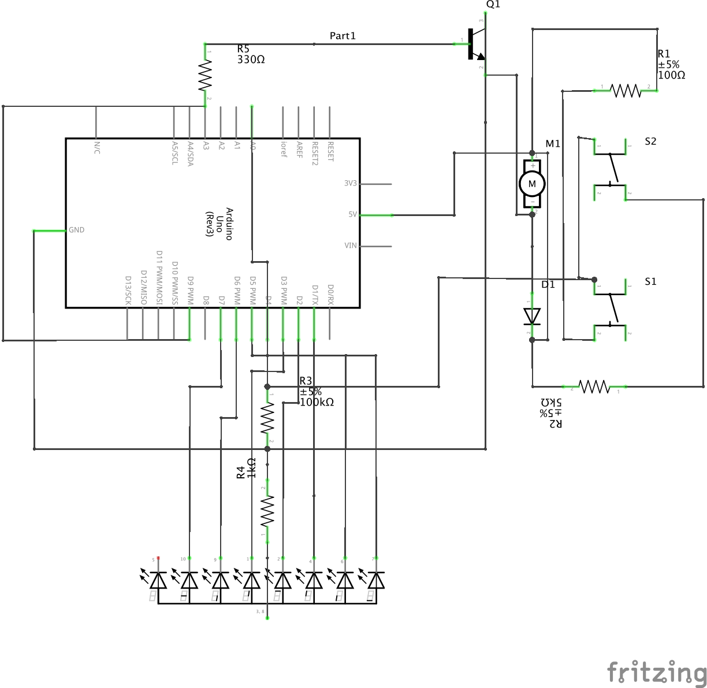

Pari Gabriel's Final Project

The circuit for my final project.
A video demonstrating how Your #1 Fan works.

I'm thinking of using an LED screen, two buttons, and a fan to create... Your #1 Fan. The buttons are used to count up or down on the LED screen and whenever the number is 001, the fan turns on.
#include "SevSeg.h"
SevSeg sevseg;
// Initializes display number to start at 0
int num = 0;
const int motorPin = 9;
void setup(){
Serial.begin(9600);
// Sets up pin 9 to output power to the DC motor
pinMode(motorPin, OUTPUT);
// Sets up the 7 segment display library
byte numDigits = 1;
byte digitPins[] = {};
byte segmentPins[] = {6, 5, 2, 3, 4, 7, 8, 9};
bool resistorsOnSegments = true;
// Sets beginning display to 0
sevseg.setNumber(0);
byte hardwareConfig = COMMON_CATHODE;
sevseg.begin(hardwareConfig, numDigits, digitPins, segmentPins, resistorsOnSegments);
sevseg.setBrightness(90);
}
void loop(){
// Sets the button variable to be read from pin A0
int button = analogRead(A0);
// Show what input the buttons are giving to the program
Serial.println(button);
delay(100);
// Check if left button is pressed (Serial readout will be between 900-980)
if (900 < button & button < 980) {
// Increment the display +1
sevseg.setNumber(num++);
// Refresh the display to show the newly incremented number
sevseg.refreshDisplay();
}
// Check if right button is pressed (Serial readout will be between 980-1020)
if (980 < button & button < 1020) {
// Increment the display -1
sevseg.setNumber(num--);
sevseg.refreshDisplay();
}
// Resets the display number to 0 once it reaches above 9
if (num == 10) {
num = 0;
sevseg.setNumber(num);
sevseg.refreshDisplay();
}
// Resets the display number to 9 once it reaches below 0
if (num == -1) {
num = 9;
sevseg.setNumber(num);
sevseg.refreshDisplay();
}
// Turns on DC motor if the display is at 1
if (num == 1) {
digitalWrite(motorPin, HIGH); // turn the motor on (full speed)
delay(700);
sevseg.setNumber(num);
sevseg.refreshDisplay();
}
}
The code behind Your #1 Fan.
Materials
- DC Motor
- Fan attachment
- 2x pushbutton
- 5x resistors (100, 330, 1k, 5k, 100K)
- NPN transitor
- Diode Rectifier
- 1 Digit 7-Segment display
I used a 1k resistor for the left button and a 5k resistor for the right button. For some reason, the buttons would read out as almost equal in my serial monitor until I added a 100K resistor before the ground connection. I found this solution in an Arduino forum, but they didn't explain exactly why it worked. Another way (easier) to do this would have been to just connect each button to different input pin.
An NPN transistor and flyback diode were used with the DC motor to provide enough current to the motor and keep current from spiking and messing with the motor.
A single 330 ohm resistor was used for the 7 segment display instead of 7 separate resistors to save space on the breadboard. This ended up almost imperceptably reducing the brightness when all the segments were turned on (8) versus when just two segments were turned on (1).